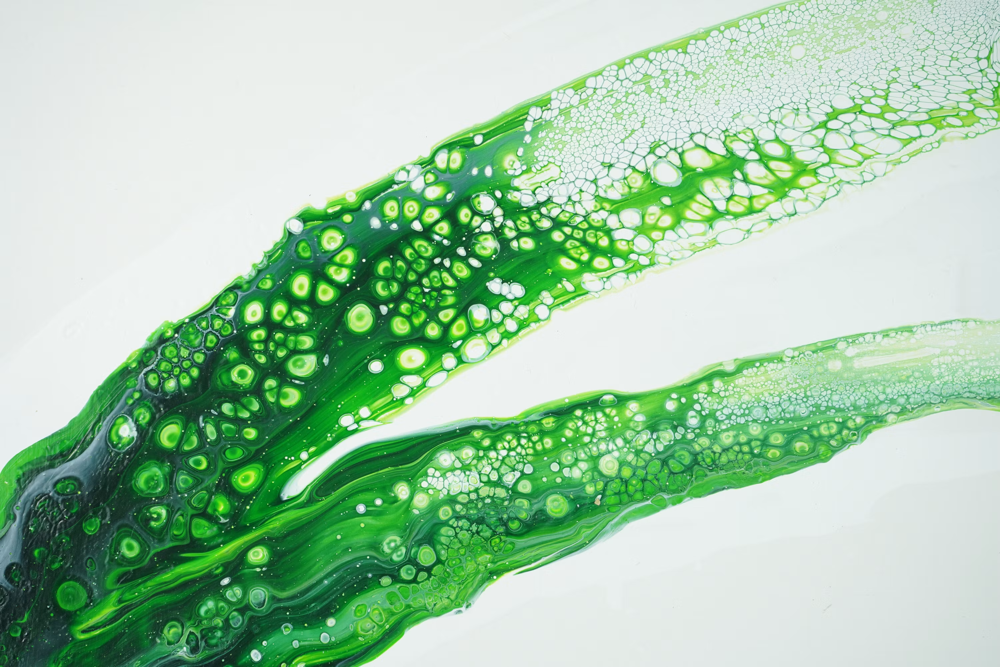

Natural Synergy
Entenda como a biologia e a tecnologia se unem para criar um ciclo inteligente de respiração e energia.
As microalgas são responsáveis por mais de 50% do oxigênio que respiramos no planeta, sendo muito mais rápidas que as plantas na captura de CO₂ do que as plantas. Elas se reproduzem rapidamente, capturam gases e ajudam a transformar resíduos do ar em nutrientes.

Diferente de plantas comuns em vasos, o nosso bio-reator mantém microalgas ativas em condições controladas, aumentando a eficiência da captura de carbono e da produção de oxigênio.